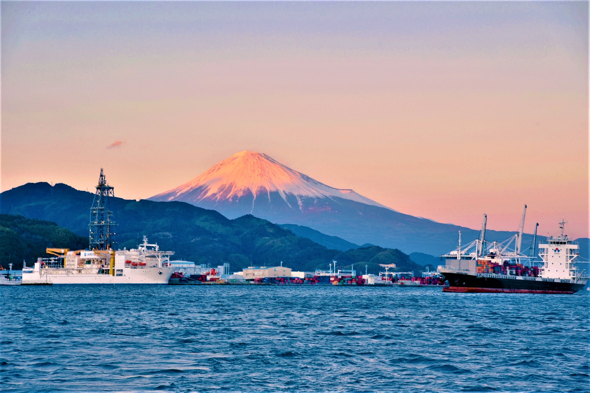
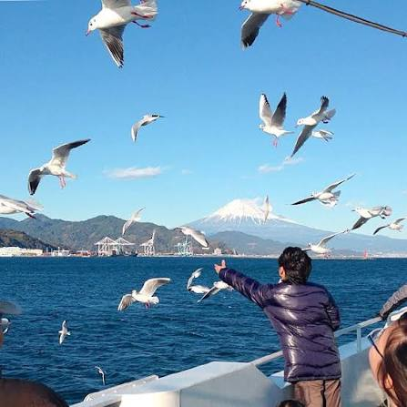
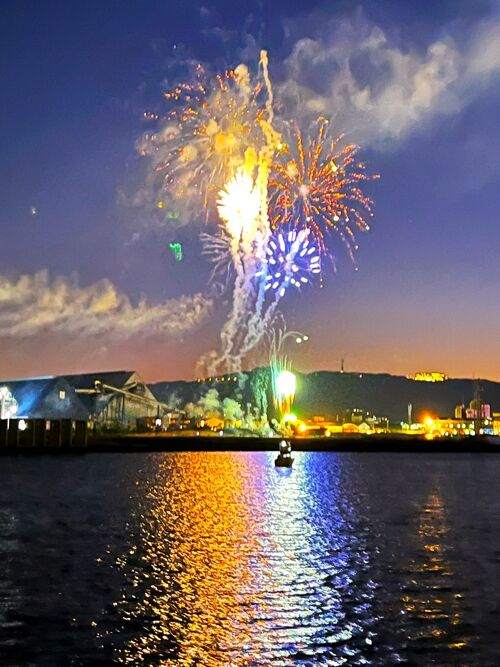
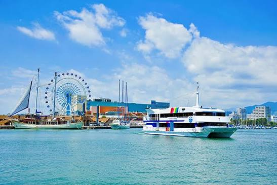

船のデッキに出た瞬間、目の前に広がる真っ青な海と、髪を揺らす心地よい潮風！「うわぁ、気持ちいい！」と思わず大きく深呼吸したくなるような、自由で開放的な洋上の大冒険が始まります。

視界を遮るものが何もない海の上だからこそ見られる、世界遺産・富士山の圧倒的な美しさ。青く輝く海原の向こうにドーンとそびえ立つ姿は、思わず言葉を失うほどの感動的な大パノラマです！

出発した清水港の街並みや、たくさんのヨットが浮かぶハーバーがだんだん小さくなっていく様子もワクワク感を高めてくれます。旅の期待感が最高潮になる楽しいひとときです。

きらきら光る波しぶきをバックに、仲間たちとワイワイ言いながら写真を撮る時間は最高の一生モノの思い出！みんなで一緒に風を感じながら、最高の笑顔がこぼれること間違いなしです。